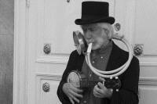
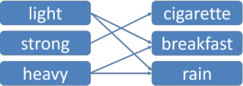

Collocation: essentials

What is collocation?
Simply put: the juxtaposition of words with other words with a frequency greater than chance
Another definition is the tendency in all languages for certain
words to co-occur
To explain. Some words are primed to occur with other words
and the term for this lexical priming as it is called, is
collocation.
A key term to understand is synonymy which just refers to the fact
that two or more words may have approximately the same meaning such
as heavy, weighty and hefty which can all be used
to describe a stone. We can say, too that:
It's a weighty responsibility
It's a hefty responsibility
or
It's a is heavy responsibility
without changing the sense of the phrase very much.
However, we do not speak of a weighty rain shower or of
having a hefty head when we are tired, even though the
adjectives carry a very similar meaning. We can say,
therefore, that all three words collocate with the word
responsibility but not with the phrase rain shower.
 |
Task: Here are some more examples. Can you fill these gaps with a suitable word? Click here |
| torrential ______ | ______ carriage | high ______ |
| air-conditioning ______ | ______ and fro | the black ______ of the family |
| an open and ______ case | towering ______ | flock of ______ |
Some are easy, aren't they?
- It's reasonable to guess that you had torrential rain but waterfall seems possible, too.
- Words or phrases which collocate with carriage are less predictable but there is a limited range including gun, horse drawn, hackney, railway, open-top and possibly a few more.
- Words such as high have a much greater collocational range and it's impossible to predict what you might have put in the gap – velocity, wall, chair, horse, price, tree? The list of possibilities is long but not infinite and does not include child, dog, book, paper and thousands more. Because the word can have more than one meaning, other collocates are possible such as life, finance and literature.
- There are far more words which can't naturally follow air-conditioning than can. The most obvious choice is probably unit but system, plant and duct, are possibilities, of course. It's a fair bet that you did not select piece, arrangement, workshop and many more which could in some circumstances be synonyms of unit, system and plant but which simply do not collocate naturally with the noun phrase.
- to and fro, the black sheep of the family and an open and shut case are widely understood clichés. Native speakers know thousands of these chunks and deploy them almost as single words (lexemes, technically) to save thinking time. The only word with collocates with and fro is to in English so this is an example of a very powerful collocation called a fixed idiom.
- The adjective towering can only be used to describe certain nouns. It's not possible to say what you thought of but the list won't be very long: inferno, rage, mountain range, wall, column, arch and giant are all possibilities but happiness, joy, mouse, cream cake, keyboard and many thousands of other nouns are simply not possible.
- flock of will only be followed by a very restricted range of other items (all nouns) such as sheep, birds, starlings etc. Saying a flock of lions is absurd and a flock of school children is unusual but possible if you want to conjure a particular image in the hearer's mind. (In fact, many authors deliberately use unusual combinations of words to jolt the reader.) The term, by the way, is called an assemblage noun and there are a number of common ones in English which only collocate with certain nouns including gang, shoal, herd, pack etc.
The most obvious problem for learners of the language is the
sheer unpredictability of many collocations which, for a native
speaker, are ingrained in the memory. We cannot guess that,
for example:
*heavy fog
*short face
*make the washing
*do the bed
*lose a train
are all forbidden in favour of dense, long, do, make and
miss respectively.
We can, however, help learners to acquire more natural language by making them aware of common collocation from an early stage and that, of course, means that we need to know a bit more about them than our learners. That's what this short guide is for.
Classification by strength |
Naturally, some collocations are stronger than others, as we saw above. The nature of collocation can be illustrated like this:

Note the overlaps. There is probably no principled way in which we can always distinguish, e.g., a strong collocation from an idiom or a binomial although it is easy enough to identify examples of one or the other.
- Idioms
These are pretty much fixed and unalterable expressions in a language. A one-man band
For example, someone can be described as
a one-man band
a jack of all trades
the life and soul of the party
etc. Things can be talked about as
the odd one out
a blessing in disguise
chicken feed
a flash in the pan
and so on.
There are literally thousands of such expressions in every language which people can deploy almost as if they were single words, saving thinking time and maintaining fluency. There are a number of exercises in the pages for learners which focus on this type of collocation. For examples, go to here or here. All those links open in new tabs.
Idioms which are fixed and into which you cannot insert words or change words while maintaining the same meaning hardly qualify as collocations at all because there is no sense of a constrained selection. - Binomials
These are a special sort of idiom made up of two elements which always appear in the same order. If they are nouns, they are often used with a singular verb form because they represent a single concept (we say, e.g., supply and demand is the issue not are the issue).
Thunder and lightning
Examples are:
to and fro
thunder and lightning
spic and span
neither here nor there
in and out
cheap and nasty
etc.
(There are also some trinomials in English such as
left, right and centre
bell, book and candle
cool, calm and collected
hook, line and sinker
etc.)
Binomials often contain words found in no other contexts. They, too, because of their fixed and usually unalterable nature, do not really count as collocations. - Weak, medium and strong collocations
Strong collocations can almost always be predicted by native speakers of a language (or at least have very few alternatives). For example, if you are asked to fill the gap in the following, your answer is probably quite predictable.
Make a wish
Please __________ free to ask any questions.
Many collocations like this occur with general-purpose verbs (often called delexicalised verbs because the meaning comes from the noun, not the verb itself) such as:
The point at which strong collocations like these become so predictable and fixed as to qualify as idioms rather than collocations is not at all easy to discern.Verb Collocating nouns do homework, justice to, an injury, a service, a favour, wrong, the shopping, damage get a joke, a job, rid of, married, divorced, old, punishment, arrested give explanations, thanks, consideration, thanks, one's word, promises go mad, home, away, bad, sour, crazy, on holiday, to work have a bath, a shower, lunch, a holiday, a job, a break, a day off, an argument make mistakes, haste, a fuss, arrangements, certain, discoveries, fun of, a journey, peace, war, a mess, money, friends pay attention, a compliment, your respects put aside, a question, an alternative, a suggestion, something in place, together, in prison set a task, a clock, a table, something in place, aside, in context, a recorder take advantage, notice, pains, root, an offer, an interest, place, offence
Weaker, medium-strength collocations are often adjective-noun combinations. The number of possible adjectives for rain is large but not infinite (heavy, light, drizzly, hard, thin etc.) and excludes adjectives such as strong, powerful etc.
Very weak collocations are those in which there is a wide range of possibilities. For example, it is probably not possible to provide a completely exhaustive list of all the words which could fill the gap in:
He did __________ yesterday. - Textual collocation
This refers to the tendency for sets of words to occur together in a text on a particular topic. A text about families will probably include, e.g., home, children, parents, arguments and so on but one about smoking would have cigarette, health, addictive, nicotine, secondary etc.
If you want to know more about idioms and binomials, see the guide to idiomaticity in the in-service section of this site, linked below.
 |
Classification by word class |
Collocations can also be classified by word class. This is
often a useful way to limit one's focus in the classroom and help
learners to identify collocations of a particular sort so they are, for
example, only trying to notice particular combinations of words, not all
combinations.
At lower levels, the most important combinations are probably
adjective + noun and
verb + noun as these are very frequent
and frequently variable across languages.
| Word classes | Examples |
| adjective + noun: | high wall, tall person, flat landscape, painful toothache etc. but not painful taste or thin road |
| verb + noun: | close a shop / door etc. but turn off a light (See the list above, too.) |
| adverb + adjective: | ecstatically happy, deeply depressed but not seriously lighthearted or medicinally interested |
| noun + noun: | flock of sheep, herd of goats but not pride of elephants or ingot of chocolate |
| verb + adverb: | scream loudly, tiptoe noiselessly but not scream swiftly or tiptoe violently |
| verb + prepositional phrase: | swing to and fro, descend into misery, explode with anger but not handle with indifference or explode with tears |
You can test yourself to make sure you can recognise stronger and weaker
collocation of these six types by clicking
here.
We may, incidentally, disagree about some of the matches in that test
because concepts of strength vary between people.
 |
Inequality |
Collocation does not work equally in both directions. For example:
The number of nouns which can combine with the adjective heavy
is huge and will include:
weight, car, man, breathing, metal, plate, computer,
stone, table, brick, key, ashtray
and almost every other noun which is not in itself associated with
something light, such as feather or bubble. The
number of possible nouns runs into many thousands.
However, if we take any of these nouns, it is easy to see that the
number of adjectives which can be used to modify them is much smaller
than the number of nouns which can be modified by heavy.
For example, the noun rain can be modified by heavy
but it is clear that the number of other adjectives we can use with this
noun is limited and it is almost possible to produce a complete list
confined to:
| abundant acid blessed ceaseless chill chilly cold constant |
continual continuous cool copious driving drizzly endless excessive |
fine frequent gentle grey hard icy incessant intermittent |
light misty moderate occasional perpetual persistent plentiful refreshing |
relentless soft steady sudden thin torrential tropical warm |
You may be able to think of a few others but the list is clearly not
anything like as long as the list of nouns which can be described as
heavy.
Equally, as we saw above, the adjective torrential can only be
used with a small number of nouns and it is possible to come up with a
list of fifteen:
| cloudburst current deluge |
downpour flood monsoon |
rain rainstorm rapids |
river shower storm |
stream thunderstorm waterfall |
and it is quite possible that not all native speakers of English would accept all those as natural combinations.
Other sorts of collocation work the same way so, for example, the list of nouns which can be the object of the verb make is very long but the list of verbs which can use bed as the object is very much shorter.
There is a classroom implication that we need to focus on collocations which are limited, not on those which are so numerous that they can't be taught.
 |
Teaching collocation |
Collocations are very helpful for learning vocabulary.
In particular, medium and strong collocations are encountered
frequently, can often be used a single chunk, without the need to think
too much and make a learner's production seem much more authentic.
Many learners are also very keen to learn idioms in English and,
providing we focus on common ones which are usable in many different
settings (i.e., avoiding things like raining cats and dogs
which nobody uses), they, too, can form part of our teaching.
There are some things to consider:
- helping learners to notice collocation
- It is unusual to find any kind of reading text which doesn't contain
some obvious collocations so make sure you focus on them at some time in a
reading lesson. Eventually, your students should be able to spot them
for themselves. Highlighting likely
collocations in texts is effective.
A small trick is to design a short text in which the collocations are wrong and get learners a) to notice them and b) to correct them. At higher levels, this can make an interesting change to a dictation. You dictate the text with the false collocations and the learners correct it as they go along. - teaching vocabulary thoroughly
- Whenever you teach a new verb, remember to set it in a context of what sort of nouns it collocates with. For example, if you teach unearth try make sure that your learners know what sorts of things can be unearthed – the truth, a body, an artefact, evidence etc. If you teach a new adjective, treat it similarly and make sure your learners know what sorts of things it describes, for example, greedy applies to animate things, mostly, but you can have a greedy bank.
- focusing some lessons on collocation
- This is such a useful area that it is worth making it part of your usual teaching programme. It is worth considering, for example, basing a lesson around notions such as size, weight, length, temperature and so on so that you can focus the learners on such things as tall building, high wall, narrow street, heavy load, scorching sunshine, bitterly cold, extensive grounds, crushing weight etc. This may help your learners avoid saying things like thin street, flimsy load, boiling sunshine, severely cold or grave weight.
- being clear
- If you are a native speaker of English in particular, you may often feel that a collocation such as shuddering with fear or burying an argument is conceivable (and they both are) but your students want clear answers and access to more natural collocations so, unless they are very advanced, stick to the clichés – we shiver or tremble with fear, resolve arguments and bury hatchets.
Here are some examples of exercise types you could use in collocation teaching
Odd-one out:
| Adjective – Noun |
Tall – person,
mountain, tree, wall? Torrential – rain, water, river, downpour, snow? Rain – gentle, heavy, strong, hard, tough? Problem – large, strong, difficult, big, heavy? |
| Verb – Noun | Make / Do
– homework, money, a mistake,
an effort? Catch – cold, meaning, idea, bus, lift? Path – wind, turn, twist, coil, spiral, twirl? Wage – pay, earn, settle, gain, give, achieve? |
Word grids. Students work with dictionaries and/or a text to put a X in the right boxes:
| frozen food | your heart | out | relationships | into tears | sugar | ice | chocolate | |
| thaw | X | |||||||
| melt | ||||||||
| dissolve |
Matchers. Students draw the lines and end up with something like this:

Gap fills. Students work together to see what can naturally go in the gaps:
We …………… the …………… path up the mountain until we …………… the summit.
The view was quite …………… and we …………… for over an hour just …………… it.
Selections. Students choose the right collocations:
The tasteless / foul / bright hotel
was in a dirty / unclean / polluted
alley.
The receptionist was so abusive / cruel / spiteful that we felt
undesirable / unwelcome / objectionable from the outset.
| Related guides | |
| exercise index | for some exercises to do with collocation for learners |
| collocation | for a much more detailed guide to the area in the in-service section |
| idiomaticity | If you want to know more about idioms and binomials |